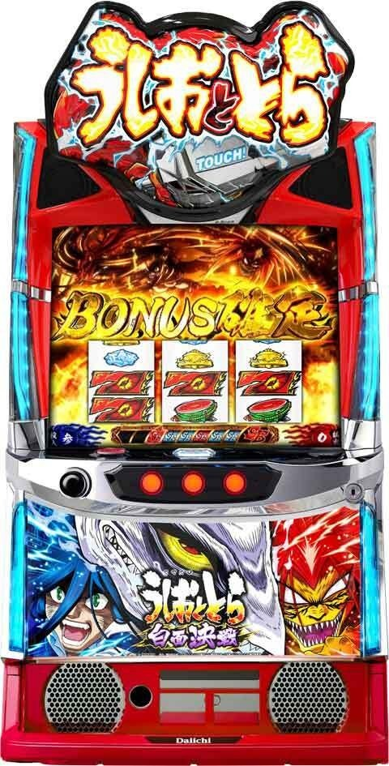
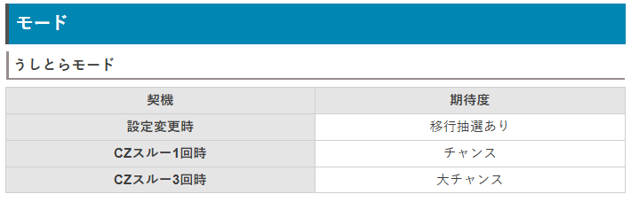
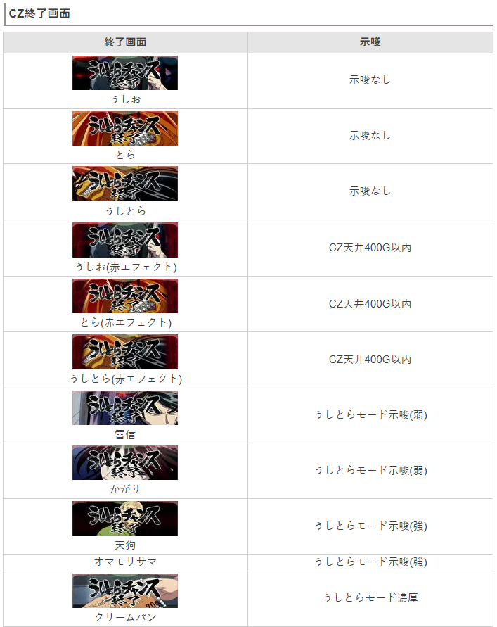
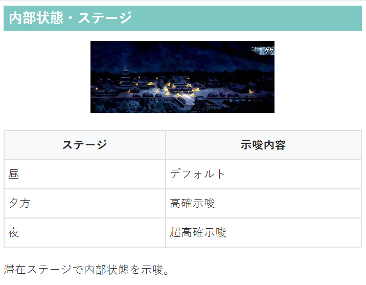

Lうしおととら白面決戦VH


狙い目
【リセット狙い】
AT間 850G（CZ間0G想定）
CZ間スルー別
0スルー 130Gから
1スルー 350Gから
2.3スルー 460Gから
4スルー 160Gから
5スルー以降 不明
【CZ間天井狙い】
0スルー
駆け抜け後 400Gから
駆け抜け後以外 450Gから
1スルー 380Gから
2スルー 370Gから
3スルー 360Gから
4スルー以降 350Gから
うしとらモード濃厚なら0Gから当選まで？
※「うしとらモード」は当選したCZが必ず「うしとらCZ以上」となる。
【CZ終了画面狙い】
クリームパン(うしおCZ、とらCZ後のみ有効） CZ当選まで
オマモリサマ CZ当選まで？
※終了画面クリームパンはうしとらCZ後は示唆として無効
【AT間天井狙い】
1700Gから(CZ間0G想定）
【有利区間関連狙い】
不明
やめ時
AT終了後に激槍慟哭ZONEを確認してヤメ。
その他



参考元
基本情報
- メーカー: Daiichi
- 機械割: 97.9% 〜 114.9%
- 導入開始日: 2025年04月07日（月）
- ゲーム性概要: ●通常時はおもにレア役でうしとらチャンス（CZ）を抽選 ●CZ成功でボーナス当選 ●スピアオブザビーストは30G継続で、メーターアップやボーナスを抽選 ●30G消化後はメーター数×1G継続する妖ジャッジメントクリアでボーナスへ ●特定条件達成で上位AT突入 ●上位ATのループ率は81%以上と超強力!!


打ち方
打ち方・小役
打ち方（小役狙い）
「最初に狙う絵柄」 左リールにBARを狙う。

「チェリー停止時」 成立役…弱チェリーorうしお強チェリーorとら強チェリーorうしとら強チェリー 中＆右リールにうしお＆とら絵柄の塊を目押し。いずれかのリールにうしおが止まればうしお強チェリー、とらが止まればとら強チェリー、両方が止まればうしとら強チェリーになる。

「スイカ停止時」 成立役…スイカorチャンス目 中リールはBARを目安にスイカを狙う。右リールは取りこぼしがないのでフリー打ちでOKだ。

「レア役の停止形」

「妖目」 中段リリベが止まると妖目（1枚役）。

変則押しはNG
通常時・押し順ナビなし時は左リール第1停止での消化を推奨する。

解析情報通常時
小役関連
小役確率
| 役 | 確率 |
|---|---|
| 通常リプレイ | 1/8.9 |
| 妖目 | 1/6.98 |
| チェリー | 1/84.3 |
| うしお強チェリー | 1/256.0 |
| とら強チェリー | 1/256.0 |
| うしとら強チェリー | 1/1024.0 |
| チャンス目 | 1/256.0 |
| スイカ | 1/128.0 |
小役確率は全設定共通。妖目を除くレア役合算確率は1/30.9だ。
CZ当選率（設定1）
| 役 | 低確 | 高確 | 超高確 |
|---|---|---|---|
| 妖目1回 | ー | ー | ー |
| 妖目２連 | 0.06% | 0.06% | 3.18% |
| 妖目３連 | 9.61% | 20.05% | 39.94% |
| 妖目４連 | 100% | 100% | 100% |
| 妖目５連 | 100% | 100% | 100% |
| チェリー | 0.84% | 1.65% | 20.70% |
| スイカ | 0.45% | 0.84% | 10.21% |
| チャンス目 | 10% | 18.55% | 59.46% |
| うしお強チェリー | 30.18% | 60.03% | 80.19% |
| とら強チェリー | 30.18% | 60.03% | 80.19% |
| うしとら強チェリー | 50.23% | 75.15% | 100% |
低確中のうしお強チェリーであれば約30.2%〜38%など、高設定ほどCZに当選しやすい。妖目5連はCZ成功も濃厚、6連目以降はVストックを獲得する。
契機別の当選する可能性のあるCZ
| 契機 | うしおCZ | とらCZ | うしとらCZ |
|---|---|---|---|
| チェリー | 〇 | 〇 | |
| スイカ | 〇 | ||
| うしお強チェリー | 〇 | 〇 | |
| とら強チェリー | 〇 | 〇 | |
| うしとら強チェリー | 〇 | ||
| 上記以外 | 〇 | 〇 | 〇 |
スイカは当選率が低い代わりに、当選時はうしとらCZ濃厚。うしお強チェリーはうしおCZ or うしとらCZのように、強チェリー契機は対応するキャラのCZへ突入する。
うしおCZ or とらCZ前兆中・うしとらCZ昇格当選率
| 役 | 当選率 |
|---|---|
| うしおCZ本前兆中のとら強チェリー | 31.25% |
| とらCZ本前兆中のうしお強チェリー | 31.25% |
うしおCZ or とらCZ前兆中は、非対応の強チェリー成立時にうしとらCZへの昇格が抽選。対応する強チェリー成立時はCZ成功が抽選される。
内部状態関連
キャラ高確移行率
内部状態とは別に、弱チェリーなどでCZに当選した場合にどのCZに移行しやすいかが変化するキャラ高確が存在。 うしとら強チェリー成立後は必ずうしとら高確へ移行するため、仮にCZに当選しなくてもその後のレア役でうしとらCZに期待できる。
キャラ高確移行率
| 役 | うしお高確へ | とら高確へ | うしとら高確へ |
|---|---|---|---|
| 妖目1回 | ー | ー | ー |
| 妖目２連 | 15.63% | 15.63% | ー |
| 妖目３連 | ー | ー | ー |
| 妖目４連 | ー | ー | ー |
| 妖目５連 | ー | ー | ー |
| チェリー | 15.63% | 15.63% | ー |
| スイカ | 27.73% | 27.73% | ー |
| チャンス目 | 50.00% | 50.00% | ー |
| うしお強チェリー | ー | ー | ー |
| とら強チェリー | ー | ー | ー |
| うしとら強チェリー | ー | ー | 100% |
モード
うしとらモード
設定変更時やCZ失敗時の一部で移行するモード。滞在中はCZ当選時に必ずうしとらCZ以上が選択される。
うしとらモード移行期待度
| 契機 | 期待度 |
|---|---|
| 設定変更時 | 移行抽選あり |
| CZスルー1回時 | チャンス |
| CZスルー3回時 | 大チャンス |
うしとらチャンス（CZ）
うしとらチャンス概要
ボーナス当選のメイン契機となるCZ。うしおCZ・とらCZ・うしとらCZの3種類があり、うしおCZととらCZは突入契機やゲーム性が異なるものの、期待度は共通。うしとらCZは期待度が約2倍にアップした上位版だ。 いずれも消化中の妖目（2連）やレア役でうしとらボーナスを抽選する。

CZ確率
| 設定 | 確率 |
|---|---|
| 1 | 1/178.0 |
| 2 | 1/175.6 |
| 3 | 1/169.7 |
| 4 | 1/164.5 |
| 5 | 1/161.9 |
| 6 | 1/159.0 |
うしおorとらCZ性能
| 項目 | 内容 |
|---|---|
| 当選契機 | レア役での抽選 |
| 継続ゲーム数 | 10G |
| 成功期待度 | 約33% |
| 消化中の抽選 | 妖目2連や妖目後にレア役成立でボーナス濃厚、 チャンス目は大チャンス、 対応強チェリーはボーナス濃厚、 非対応強チェリーはうしとらCZへ昇格 |
うしとらCZ性能
| 項目 | 内容 |
|---|---|
| 当選契機 | レア役での抽選、うしおorとらCZからの昇格 |
| 継続ゲーム数 | 10G |
| 成功期待度 | 約66% |
| 消化中の抽選 | レア役成立でボーナス濃厚 |
うしおCZ中であればうしお強チェリーとうしとら強チェリーが対応強チェリー、とら強チェリーが非対応強チェリーとなる。
「うしおCZ」 狙え成功でボーナス。

「とらCZ」 フリーズ発生でボーナス。

「うしとらCZ」 うしおCZととらCZの2つが複合していて、狙え成功orフリーズ発生のいずれかでボーナス濃厚。開始時からうしとらCZへ突入するパターンと、うしおorとらCZ中の抽選でうしとらCZへ昇格する2つの突入契機がある。

［うしおorうしとらCZ］狙え発生確率
| 狙え | その他 | 妖目の次ゲーム | |
|---|---|---|---|
| 中リール | フェイク | 1/9.1 | ー |
| 中リール | 成功 | 1/111.8 | 1/6.99 |
| 右リール | フェイク | 1/356.0 | ー |
| 右リール | 成功 | 1/260.1 | 1/260.1 |
| 左リール | フェイク | ー | ー |
| 左リール | 成功 | 1/1024.0 | 1/1024.0 |
妖目の次ゲームはフェイクがないので、狙えが発生した時点で揃い（ボーナス当選）濃厚。確率は低いが、左リール狙えはどの状況でも発生した時点で揃い濃厚となる。
狙え発生時の期待度
| 狙え | その他 | 妖目の次ゲーム |
|---|---|---|
| 中リール | 7.5% | 100% |
| 右リール | 57.8% | 100% |
| 左リール | 100% | 100% |
小役契機のボーナス当選率
| 役 | うしおCZ | とらCZ | うしとらCZ |
|---|---|---|---|
| その他 | ー | ー | 2.73% |
| 妖目 | 6.25% | 6.25% | 11.01% |
| チェリー | 0.39% | 0.39% | 100% |
| スイカ | 0.39% | 0.39% | 100% |
| チャンス目 | 50.00% | 50.00% | 100% |
| うしお強チェリー | 100% | ー | 100% |
| とら強チェリー | ー | 100% | 100% |
| うしとら強チェリー | 100% | 100% | 100% |
※うしおCZ中のとら強チェリー、とらCZ中のうしお強チェリーはうしとらCZへ昇格
櫛削りノ儀（確定CZ）
櫛削りノ儀概要
CZ当選時の一部で突入するプレミアムCZ。突入した時点でボーナスは濃厚で、妖目やレア役でボーナスのライン数（継続ゲーム数）増加を抽選する。


櫛削りノ儀性能
| 項目 | 内容 |
|---|---|
| 当選契機 | うしとらチャンス当選時の一部 |
| 継続ゲーム数 | 15G |
| 成功期待度 | AT濃厚 |
| 消化中の抽選 | 演出成功のたびにボーナスのライン数が増加 |
| その他 | 朝イチ1回目のCZは櫛削りノ儀のチャンス、 AT駆け抜け後はさらにチャンス |
通常時のロングフリーズ時に突入する櫛削りノ儀は、3人成功濃厚＋Vストック抽選がおこなわれる。
フリーズ
ロングフリーズ


ロングフリーズ性能
| 項目 | 内容 |
|---|---|
| 恩恵 | 櫛削りノ儀3人成功以上＋Vストック抽選 |
ロングフリーズ動画
櫛削りノ儀3人成功以上＋Vストック抽選もあり。うしとらボーナスのゲーム数を多く持ってスタートできるので、大量出玉獲得のチャンスとなる。
解析情報ボーナス時
メインAT
うしとらボーナス概要
出玉増加のメインとなる擬似ボーナスで、消化中は妖目2連以上やレア役で覚醒やVストックを抽選。ボーナス消化後はスピアオブザビースト→妖ジャッジメントの順で移行し、妖ジャッジメント成功で再びボーナスへという流れで出玉を増やしていく。

うしとらボーナス性能
| 項目 | 内容 |
|---|---|
| 当選契機 | CZ成功後 |
| 継続ゲーム数 | 20～300G |
| 1Gあたりの純増 | 約5.0枚 |
| 消化中の抽選 | 覚醒（ボーナス高確）・Vストック抽選 |
| ボーナス終了後 | スピアオブザビーストへ |
「7揃いのライン数で継続ゲーム数が変化」 ボーナス開始時に揃う赤7のライン数（リール以外の7は液晶に出現）でボーナスの継続ゲーム数が変化する。上記画像では左リール上段に7が出現しているので、縦1ライン＋中段1ラインの2ライン揃い。


「覚醒・Vストック抽選」 妖目2連以上やレア役で覚醒（ボーナス高確状態）を抽選。獲得した覚醒はボーナス終了後のスピアオブザビーストで使用する。覚醒にはうしお覚醒・とら覚醒・うしとら覚醒の3つがあり、どれを獲得したかはリール左の「覚醒アイコン」で示唆される。

［覚醒アイコン］ アイコンの色が青ならうしお覚醒、赤ならとら覚醒、紫ならうしとら覚醒に突入する。

「白面臨界チャレンジへの移行」

ボーナス回数ごとの白面臨界チャレンジ発生期待度
| ボーナス回数 | 期待度 |
|---|---|
| 3回目 | チャンス |
| 6回目 | 大チャンス |
| 9回目以降 | 発生濃厚 |
最短3回目のボーナスから白面臨界チャレンジ発生の可能性あり。9回目以降はボーナス当選のたびに上位ATのチャンスが訪れる。
スピアオブザビースト概要
1セット30Gのバトルメーターアップさせる状態で、妖目とレア役でメーターを上げていき、10個貯まればVストックを獲得できる。 30G消化後は妖ジャッジメントでボーナスを抽選。 メーター数がそのまま妖ジャッジメントの継続ゲーム数 になる（6メーター＝6Gなど）ため、メーターを貯めるほどボーナス当選期待度もアップする。

メーターアップだけでなくボーナス直撃抽選もおこなわれていて、覚醒中ならボーナス当選期待度がアップする。
スピアオブザビースト性能
| 項目 | 内容 |
|---|---|
| 突入契機 | うしとらボーナス後 |
| 継続ゲーム数 | 30G |
| 1Gあたりの純増 | 約1.2枚 |
| 消化中の抽選 | メーターアップ、ボーナス |
| 30G消化後 | 妖ジャッジメントへ |
「メーターアップ」 メーターが0のまま30Gを消化した場合でもそのまま終了とはならず、妖ジャッジメントへ移行。この場合、ゲーム数は1G or 9Gのいずれかが選択される。

「ボーナス抽選」 スピアオブザビースト中もボーナス抽選がおこなわれていて、当選した場合は即ボーナスへ移行。獲得したメーターは次セットへ持ち越される。 Vストック獲得時は妖ジャッジメントの1G目で放出＝ボーナスとなり、こちらも獲得したメーターは次セットへ持ち越しとなる。

章ごとに発展する連続演出の種類が決まっているので、期待度の強弱は存在しない。
「エピソード進行」 ボーナス当選ごとにリール下部のエピソードが進んでいく。赤くなっている箇所（3・6・9章目）は上位AT突入チャンスとなる白面臨界チャレンジ発生に期待できる。 9章目以降は白面臨界チャレンジ発生濃厚だ。

メーターアップ当選率
| 役 | 当選率 |
|---|---|
| 妖目1回 | 約50% |
| 妖目2連～ | 100% |
| 弱レア役 | 100% |
| 強レア役 | 100%（メーター2個以上濃厚） |
スピアオブザビースト開始時に初期メーター抽選がおこなわれるので、自力で10メーターアップさせなくてもVストックを獲得できる可能性はある。
覚醒概要
うしとらボーナス中に獲得できる可能性があるボーナス高確状態。 消化中は、対応強チェリー（うしお覚醒中ならうしお強チェリーなど）成立でボーナス濃厚かつ約50%で雷槍ゾーンに突入する。

覚醒性能
| 項目 | 内容 |
|---|---|
| 突入契機 | うしとらボーナス中の抽選 |
| 継続ゲーム数 | 30G（スピアオブザビースト1セット分） |
| 消化中の抽選 | メーターアップ、ボーナス |
| その他 | 対応強チェリー成立で雷槍ゾーンのチャンス |
ボーナス当選後の本前兆中は、妖目連やレア役でボーナスのライン数アップを抽選する。
覚醒中のボーナス当選濃厚パターン
| 状態 | パターン |
|---|---|
| うしお覚醒 | うしお強チェリーorうしとら強チェリー成立 |
| とら覚醒 | とら強チェリーorうしとら強チェリー成立 |
| うしとら覚醒 | 強チェリー成立 |
妖ジャッジメント概要
スピアオブザビースト終了後に移行し、スピアオブザビースト中に獲得したメーター分だけ継続。 妖目を引けば1/2でボーナス当選、妖目2連やレア役はボーナス濃厚で、ボーナスのライン数加算にも期待できる。

妖ジャッジメント性能
| 項目 | 内容 |
|---|---|
| 移行契機 | スピアオブザビースト終了後 |
| 継続ゲーム数 | 1～9G（獲得したメーター分継続） |
| 消化中の抽選 | 妖目、レア役でうしとらボーナスを抽選 |
| ボーナス当選後 | 残りゲーム数でボーナスのライン数加算を抽選 |
Vストックあり時は妖ジャッジメント開始時にボーナスを放出。獲得したメーターは次のスピアオブザビーストへ引き継がれるので、次セットの継続期待度がアップする。 ボーナス当選後は残ったゲーム数でボーナスのライン加算が抽選される。
ボーナス確定後のライン数アップ当選率

ボーナスライン数アップ当選率
| 役 | 当選率 |
|---|---|
| 妖目 | チャンス |
| 妖目2連orレア役 | 100% |
ラインアップ高確率（妖ジャッジメント勝利後〜確定画面）中は、ボーナスのライン数アップ抽選が優遇。妖目成立でチャンス、妖目2連やレア役はライン数アップ濃厚だ。
［覚醒当選前］覚醒当選率
| 役 | うしお覚醒 | とら覚醒 | うしとら覚醒 |
|---|---|---|---|
| 弱チェリー | 7.03% | 7.03% | ー |
| スイカ | ー | ー | 1.56% |
| チャンス目 | 25.00% | 25.00% | ー |
| うしお強チェリー | 43.75% | ー | ー |
| とら強チェリー | ー | 43.75% | ー |
| うしとら強チェリー | ー | ー | 100% |
※妖目2連～でも抽選あり
［うしおorとら覚醒当選後］うしとら覚醒への昇格当選率
| 役 | うしお覚醒 | とら覚醒 | うしとら覚醒 |
|---|---|---|---|
| 弱チェリー | ー | ー | 14.06% |
| スイカ | ー | ー | 1.56% |
| チャンス目 | ー | ー | 50.00% |
| うしお強チェリー | ー | ー | 50.00% |
| とら強チェリー | ー | ー | 50.00% |
| うしとら強チェリー | ー | ー | 100% |
うしとらチェリーを引けばうしとら覚醒濃厚。基本的にはうしお覚醒orとら覚醒を獲得後のレア役でうしとら覚醒を目指す流れとなる。
Vストック当選率
| 役 | 当選率 |
|---|---|
| 妖目4連 | 50.00% |
| 妖目5連以降 | 100% |
| うしとら覚醒獲得後のレア役 | 抽選あり |
Vストック獲得のメイン契機は妖目の4連以上。レア役は先に覚醒獲得が抽選され、うしとら覚醒を獲得後にVストック抽選に回る。
ボーナス当選率
| 役 | ボーナス当選 | ボーナス当選＋ ライン数アップ |
|---|---|---|
| 妖目1回 | 50.0% | ー |
| 妖目２連 | 100% | ー |
| 妖目３連 | 100% | ー |
| 妖目４連 | ー | 100% |
| チェリー | 100% | ー |
| スイカ | ー | 100% |
| チャンス目 | ー | 100% |
| うしお強チェリー | 50.0% | 50.0% |
| とら強チェリー | 50.0% | 50.0% |
| うしとら強チェリー | ー | 100% |
最終ゲームのみ、妖目1回でもボーナスに当選。妖目の連続回数はスピアオブザビースト中から引き継がれるため、例えばスピアオブザビースト最終ゲームで妖目を引き、妖ジャッジメント1G目に妖目を引いた場合は妖目2連扱いでボーナス濃厚となる。
ボーナス当選後・ライン数アップ当選率
| 役 | その他 | うしお覚醒中 |
|---|---|---|
| 妖目1回 | ー | ー |
| 妖目２連 | ー | ー |
| 妖目３連 | 0.04% | 0.04% |
| 妖目４連 | 100% | 100% |
| 妖目５連 | 100% | 100% |
| チェリー | 0.006% | 0.012% |
| スイカ | 0.003% | 0.003% |
| チャンス目 | 1.6% | 2.5% |
| うしお強チェリー | 12.5% | 25.0% |
| とら強チェリー | 12.5% | 12.5% |
| うしとら強チェリー | 100% | 100% |
| 役 | とら覚醒中 | うしとら覚醒中 |
| 妖目1回 | ー | ー |
| 妖目２連 | ー | ー |
| 妖目３連 | 0.04% | 0.04% |
| 妖目４連 | 100% | 100% |
| 妖目５連 | 100% | 100% |
| チェリー | 0.012% | 0.012% |
| スイカ | 0.003% | 0.003% |
| チャンス目 | 2.5% | 2.5% |
| うしお強チェリー | 12.5% | 25.0% |
| とら強チェリー | 25.0% | 25.0% |
| うしとら強チェリー | 100% | 100% |
雷槍ゾーン
雷槍ゾーン概要
スピアオブザビースト中のボーナス当選時の一部で突入する、メーターアップ＆Vストック獲得の特化ゾーン。うしお・とら・うしとらの3パターンがあり、ボーナス当選契機に応じてどれに突入するかが変化する。 うしとらはうしおととらの両方の性能を持つため、他の2つに比べて強力だ。

雷槍ゾーン性能
| 項目 | 内容 |
|---|---|
| 移行契機 | ボーナス当選時の一部（初当り時を除く） |
| 継続ゲーム数 | 10G |
| 消化中の抽選 | 全役でメーターアップ＆Vストック抽選 |
| その他 | うしおorとら消化中の対応強チェリー成立で、 うしとらへ昇格する可能性あり |
平均上乗せ
| 種別 | 平均上乗せ |
|---|---|
| うしおorとら | 6メーター＆Vストック期待度［中］ |
| うしとら | 7メーター＆Vストック期待度［激高］ |
［雷槍ゾーン・うしおorとら］Vストック当選率
| 役 | うしお | とら |
|---|---|---|
| 妖目1回 | 9.4% | 9.4% |
| 妖目２連 | 20.3% | 20.3% |
| 妖目３連 | 100% | 100% |
| 妖目４連 | 100% | 100% |
| 妖目５連 | 100% | 100% |
| チェリー | 10.2% | 10.2% |
| スイカ | 25.0% | 25.0% |
| チャンス目 | 100% | 100% |
| うしお強チェリー | 100% | うしとら昇格 |
| とら強チェリー | うしとら昇格 | 100% |
| うしとら強チェリー | 100% | 100% |
うしお中のとら強チェリー、とら中のうしお強チェリーはうしとらへ昇格する。
［雷槍ゾーン・うしとら］Vストック当選率
| 役 | 当選率 |
|---|---|
| 妖目 | 100% |
| レア役 | 100% |
うしとら中は妖目1回でもVストックを獲得。レア役もVストック濃厚だ。
メーターアップ当選率
| 役 | 当選率 |
|---|---|
| 下記以外 | 約50% |
| 妖目orレア役 | 100% |
妖目以上でメーターアップ濃厚。レア役は複数アップの可能性もある。
白面臨界チャレンジ
白面臨界チャレンジ概要
ボーナス当選時の一部で発生する（確定画面で突入）、上位ATをかけたチャレンジ。ベルの押し順当てに成功すれば上位AT突入濃厚。押し順当て失敗時はうしとらボーナス確定画面へ戻る。


白面臨界チャレンジ性能
| 項目 | 内容 |
|---|---|
| 発生契機 | うしとらボーナス当選時の一部 （3・6章目はチャンス、9章目以降は発生濃厚） |
| 消化中の抽選 | 押し順を当ててベルが揃えば上位ATへ |
| 成功期待度 | 約33% |
上位AT
最終決戦ボーナス概要
上位AT中のボーナス。初期ゲーム数は20〜300Gで、消化中は妖目やレア役でゲーム数上乗せを抽選。終了後に突入する極限ジャッジメントで勝利すれば、再び最終決戦ボーナスへ突入する。

最終決戦ボーナス性能
| 項目 | 内容 |
|---|---|
| 移行契機 | 白面臨界チャレンジ成功、 SB中の中メーターMAX時の一部、 Vストック大量獲得時、 うしとらボーナス当選時の一部など |
| 継続ゲーム数 | 20～300G＋α |
| 消化中の抽選 | 内部状態移行、ゲーム数上乗せ、一天突破 |
※SB…スピアオブザビースト
上乗せ期待度が変化する通常・高確・超高確の3つがあって、超高確中はベルでも上乗せに期待できる。 チャンス目は高確移行濃厚、うしとら強チェリーは超高確移行濃厚だ。
［通常］

［高確］

［超高確］

一天突破
最終決戦ボーナス中のレア役成立時の一部で発生するループ型上乗せ。約55%〜80%で上乗せがループする。


一天突破性能
| 項目 | 内容 |
|---|---|
| 突入契機 | レア役成立時の一部 |
| 消化中の抽選 | 約55～80%で＋50G以上がループ、 妖目やレア役は継続濃厚 |
| 突入時の期待枚数 | 約2000枚 |
最終決戦ボーナス中の内部状態移行率
上乗せ期待度が変化する通常・高確・超高確の3つがあって、超高確中はベルでも上乗せに期待できる。 チャンス目は高確移行濃厚、うしとら強チェリーは超高確移行濃厚だ。
［低確中］内部状態移行率
| 役 | 高確へ | 超高確へ |
|---|---|---|
| 下記以外 | ー | ー |
| 妖目1回 | ー | ー |
| 妖目２連 | 25.00% | ー |
| 妖目３連 | 3.13% | ー |
| 妖目４連 | 3.13% | ー |
| 妖目５連 | 3.13% | ー |
| チェリー | 37.50% | ー |
| スイカ | 50.00% | ー |
| チャンス目 | 100% | ー |
| うしお強チェリー | 0.39% | ー |
| とら強チェリー | 0.39% | ー |
| うしとら強チェリー | ー | 100% |
［高確中］内部状態移行率
| 役 | 高確ゲーム数再セット | 超高確へ |
|---|---|---|
| 下記以外 | 0.39% | ー |
| 妖目1回 | ー | ー |
| 妖目２連 | ー | 0.39% |
| 妖目３連 | ー | 0.39% |
| 妖目４連 | ー | 0.39% |
| 妖目５連 | ー | 0.39% |
| チェリー | ー | 0.39% |
| スイカ | ー | 25.00% |
| チャンス目 | ー | 100% |
| うしお強チェリー | 99.22% | 0.78% |
| とら強チェリー | 99.22% | 0.78% |
| うしとら強チェリー | ー | 100% |
［超高確中］超高確ゲーム数再セット当選率
| 役 | 当選率 |
|---|---|
| 下記以外 | 0.39% |
| 妖目1回 | 50.00% |
| 妖目２連以上 | 100% |
| レア役 | 100% |
極限ジャッジメント概要
妖目やレア役でボーナスを抽選。妖ジャッジメントとは異なり、ゲーム数は9G固定となっている。

極限ジャッジメント性能
| 項目 | 内容 |
|---|---|
| 突入契機 | 最終決戦ボーナス後 |
| 継続ゲーム数 | 9G固定 |
| ボーナス期待度 | 約81%、裏モード中は約95% |
ハズレでのボーナス当選率がアップした裏モードも存在。 ボーナス当選後は妖ジャッジメント中と同様にボーナスのライン加算が抽選される。
ボーナス当選率
ボーナス当選率は妖ジャッジメントと共通。最終ゲームは妖目1回でもボーナスに当選するところや、最終決戦ボーナスから妖目回数を引き継ぐところも妖ジャッジメントと共通だ。
上乗せ抽選
| 状態 | 抽選 |
|---|---|
| 低確 | ● 妖目3連以上、チャンス目以上は上乗せ濃厚 ● 弱チェリー、スイカは上乗せのチャンス |
| 高確 | ● 妖目1回でも上乗せのチャンス ● 妖目2連以上やレア役は上乗せ濃厚 |
| 超高確 | ● 妖目1回、レア役で上乗せ濃厚 ● ベルでも上乗せのチャンス |
状態不問で、妖目5連は上乗せ＋一天突破濃厚、6連以降は一天突破の継続率がアップする。
激槍慟哭ゾーン
激槍慟哭準備中
AT終了後は激槍慟哭ゾーンの準備中からスタート。消化中はボーナス直撃や激槍慟哭ゾーンの背景昇格が抽選される。

激槍慟哭ゾーン概要
AT・上位AT終了後に必ず突入する引き戻しゾーン。16G間、妖目の連続やレア役でうしとらボーナス抽選がおこなわれる。

激槍慟哭ゾーン性能
| 項目 | 内容 |
|---|---|
| 突入契機 | AT終了後 |
| 継続ゲーム数 | 16G |
| 消化中の抽選 | 妖目の連続やレア役でうしとらボーナスを抽選 |
| 引き戻し期待度 | 約20%（準備中の直撃込み） |
| 背景パターン | 青＜赤＜ギリョウの順にチャンス |
［青背景］

［赤背景］

［ギリョウ背景］

演出情報
通常時
ステージ解説
| ステージ | 内容 |
|---|---|
| 昼 | デフォルト |
| 夕方 | 高確示唆 |
| 夜 | 超高確示唆 |
［昼］

［夕方］

高確示唆とは別に背景のキャラでキャラ高確も示唆されるようだ （ うしおの夕方ならうしお高確、とらの夕方ならとら高確滞在を示唆!?）。
［夜］

連続演出でのうしとらモード示唆
通常時の連続演出は大きく、うしお系・とら系・うしとら系の3つに分かれていて、基本的にはうしお系連続演出成功＝うしおCZのように、当選しているCZを示唆。 うしお強チェリー契機の前兆でうしとら系連続演出が発生など、成立役と移行先が矛盾した場合はうしとらモード滞在のチャンスだ。
連続演出の法則
| 種別 | 強弱 | 連続演出 |
|---|---|---|
| うしお系 | 弱 | 母ちゃんは生きてるのか |
| うしお系 | 中 | VS絵に棲む鬼 |
| うしお系 | 強 | VS蛇と蝦蟇 |
| とら系 | 弱 | 誰だ今ぶつかったの |
| とら系 | 中 | VS石喰い |
| とら系 | 強 | VS鏡魔 |
| うしとら系 | 弱 | バスに乗ってみたい |
| うしとら系 | 中 | VS飛頭蛮 |
| うしとら系 | 強 | VS衾 |
［うしお系連続演出］

［とら系連続演出］

［うしとら系連続演出］ タイトルの色はデフォルト＜赤＜てんとうむし柄＜虹の順に期待度がアップする。

前兆
前兆ステージ解説
| ステージ | 内容 |
|---|---|
| 遠野妖怪 | デフォルト |
| 神居古潭 | 本前兆期待度アップかつ、うしとらCZに期待 |
レア役成立後などは、前兆を経由してCZの当落を告知。前兆ステージは2種類あり、神居古潭は大チャンスとなる。
［遠野妖怪］ うしおパターンととらパターンの2種類あるが、期待度は共通。うしおパターンはうしおCZ、とらパターンはとらCZ当選を示唆している!?

［神居古潭］

上位AT
連続演出期待度＆成功時の恩恵
| 連続演出 | 期待度 | 恩恵 |
|---|---|---|
| あやかし | 低 | 成功時は約30%で一天突破 |
| 斗和子 | 約50% | 上乗せ以上 |
| くらぎ | 100% | ＋50G以上or一天突破 |
| シュムナ | 100% | ＋50G以上or一天突破 |
［あやかし］

［斗和子］

［くらぎ］

［シュムナ］ 赤タイトルは期待度アップ。成功濃厚の連続演出であれば、恩恵も優遇される!?

終了画面
CZ終了画面の示唆
| 画面 | 示唆 |
|---|---|
| うしお | 示唆なし |
| とら | 示唆なし |
| うしとら | 示唆なし |
| うしお：赤エフェクト | CZ天井400G以内 （うしおCZ後のみ出現） |
| とら：赤エフェクト | CZ天井400G以内 （とらCZ後のみ出現） |
| うしとら：赤エフェクト | CZ天井400G以内 （うしとらCZ後のみ出現） |
| 雷信 | うしとらモード示唆［弱］ （うしおCZ後のみ出現） |
| かがり | うしとらモード示唆［弱］ （とらCZ後のみ出現） |
| 天狗 | うしとらモード示唆［強］ （うしおCZ後のみ出現） |
| オマモリサマ | うしとらモード示唆［強］ （とらCZ後のみ出現） |
| クリームパン | うしとらモード 濃厚 （うしとらCZ後に出現した場合を除く） |
［うしお］

［とら］

［うしとら］

［うしお：赤エフェクト］

［とら：赤エフェクト］

［うしとら：赤エフェクト］

［雷信］

［かがり］

［天狗］

［オマモリサマ］

［クリームパン］